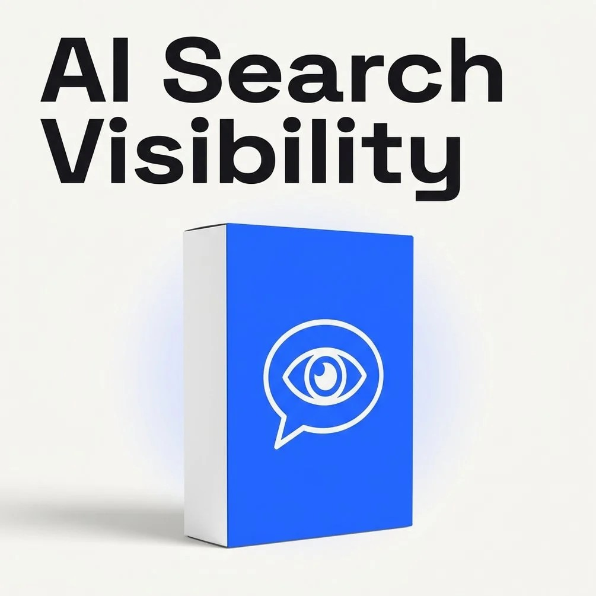

AI Skill Pack Guides / SEO and AI search visibility / AI Search Visibility Toolkit

AI Search Visibility Toolkit: free guides, templates and checklists
Free guides and tools from the AI Search Visibility Toolkit by İsmail Günaydın: how to make a website easy for ChatGPT, Perplexity, Google AI Overviews, Gemini and Claude to read and quote.
How to Optimize Your Website for AI Search - Free Step-by-Step GuideGoogle Doc How to optimize your website for AI search, step by step: take a baseline, let the right crawlers in, make pages readable and quotable, make your brand clear, then score and re-check. Free guide by İsmail Günaydın.
AI User Agents Crawler List for robots.txt - Free Google SheetGoogle Sheet A free AI user agents crawler list for robots.txt in Google Sheets: what each AI bot does, what blocking it changes, copy-ready robots.txt lines and a check-off list for your own site.
How to Measure AI Search Visibility in 10 SlidesGoogle Slides How to measure AI search visibility in 10 slides: a prompt test you can repeat, the six parts of a GEO score with their weights, what the score bands mean and how to re-check.
GEO Content Checklist - Printable Page-by-Page CheckPDF A printable GEO content checklist to run on one page at a time: answer blocks, self-contained passages, structure, facts and sources, author and entity signals, and the technical last mile.
AI Search Visibility Toolkit - Free Guides, Tools and LinksLink hub Free guides and tools from the AI Search Visibility Toolkit by İsmail Günaydın: how to make a website easy for ChatGPT, Perplexity, Google AI Overviews, Gemini and Claude to read and quote.
General information only; AI platforms change often, results depend on your site and competitors, and no method guarantees a citation. Not affiliated with OpenAI, Anthropic, Google, Perplexity or Microsoft.